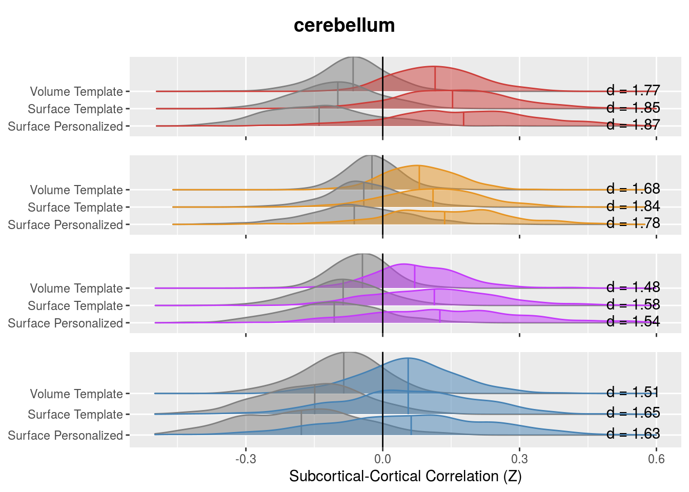

Chapter 9 trying to calculate an vs off diagonal term
In the above table to calcuculated the “focussing” effect as the change (in on person) between in connectivity with the expected parcel subtracted by the change in connectivity from other regions.
Below we plot these values against zero
net_focus <- net_means %>%
ungroup() %>%
mutate(pint_diff = netmean_pvertex - netmean_tvertex,
vpint_diff = netmean_pvertex - netmean_tvolume,
surf_diff = netmean_tvertex - netmean_tvolume) %>%
group_by(subject, subcort_ROI, YeoNet, conn_type) %>%
summarise(nets_avg_pint_diff = mean(pint_diff),
nets_avg_vpint_diff = mean(vpint_diff),
nets_avg_surf_diff = mean(surf_diff)
) %>%
ungroup() %>%
gather(comparison, nets_avg, nets_avg_pint_diff, nets_avg_vpint_diff, nets_avg_surf_diff) %>%
spread(conn_type, nets_avg) %>%
mutate(focus_effect = same_net - diff_net)
net_focus %>%
ungroup() %>%
group_by(subcort_ROI, YeoNet, comparison) %>%
do(tidy(t.test(.$focus_effect))) %>%
kable()| subcort_ROI | YeoNet | comparison | estimate | statistic | p.value | parameter | conf.low | conf.high | method | alternative |
|---|---|---|---|---|---|---|---|---|---|---|
| cerebellum | VI | nets_avg_pint_diff | 0.0274058 | 11.6427697 | 0.0000000 | 493 | 0.0227809 | 0.0320307 | One Sample t-test | two.sided |
| cerebellum | VI | nets_avg_surf_diff | 0.0414541 | 10.8475696 | 0.0000000 | 493 | 0.0339456 | 0.0489625 | One Sample t-test | two.sided |
| cerebellum | VI | nets_avg_vpint_diff | 0.0688599 | 14.1640353 | 0.0000000 | 493 | 0.0593079 | 0.0784119 | One Sample t-test | two.sided |
| cerebellum | SM | nets_avg_pint_diff | 0.0205586 | 9.4833067 | 0.0000000 | 493 | 0.0162992 | 0.0248181 | One Sample t-test | two.sided |
| cerebellum | SM | nets_avg_surf_diff | 0.0518569 | 15.4654578 | 0.0000000 | 493 | 0.0452688 | 0.0584450 | One Sample t-test | two.sided |
| cerebellum | SM | nets_avg_vpint_diff | 0.0724155 | 17.4516048 | 0.0000000 | 493 | 0.0642626 | 0.0805684 | One Sample t-test | two.sided |
| cerebellum | DA | nets_avg_pint_diff | 0.0287201 | 12.9214762 | 0.0000000 | 493 | 0.0243531 | 0.0330872 | One Sample t-test | two.sided |
| cerebellum | DA | nets_avg_surf_diff | 0.0418660 | 13.7824757 | 0.0000000 | 493 | 0.0358977 | 0.0478343 | One Sample t-test | two.sided |
| cerebellum | DA | nets_avg_vpint_diff | 0.0705861 | 17.1307845 | 0.0000000 | 493 | 0.0624904 | 0.0786819 | One Sample t-test | two.sided |
| cerebellum | VA | nets_avg_pint_diff | 0.0333369 | 16.8287593 | 0.0000000 | 493 | 0.0294448 | 0.0372291 | One Sample t-test | two.sided |
| cerebellum | VA | nets_avg_surf_diff | 0.0560229 | 19.6440835 | 0.0000000 | 493 | 0.0504195 | 0.0616263 | One Sample t-test | two.sided |
| cerebellum | VA | nets_avg_vpint_diff | 0.0893598 | 22.4772273 | 0.0000000 | 493 | 0.0815487 | 0.0971710 | One Sample t-test | two.sided |
| cerebellum | FP | nets_avg_pint_diff | 0.0418528 | 18.7746195 | 0.0000000 | 493 | 0.0374728 | 0.0462327 | One Sample t-test | two.sided |
| cerebellum | FP | nets_avg_surf_diff | 0.0367357 | 15.3459008 | 0.0000000 | 493 | 0.0320323 | 0.0414391 | One Sample t-test | two.sided |
| cerebellum | FP | nets_avg_vpint_diff | 0.0785885 | 22.6607390 | 0.0000000 | 493 | 0.0717745 | 0.0854025 | One Sample t-test | two.sided |
| cerebellum | DM | nets_avg_pint_diff | 0.0537150 | 21.0774329 | 0.0000000 | 493 | 0.0487078 | 0.0587222 | One Sample t-test | two.sided |
| cerebellum | DM | nets_avg_surf_diff | 0.0609553 | 17.7505429 | 0.0000000 | 493 | 0.0542082 | 0.0677024 | One Sample t-test | two.sided |
| cerebellum | DM | nets_avg_vpint_diff | 0.1146703 | 25.1856622 | 0.0000000 | 493 | 0.1057247 | 0.1236160 | One Sample t-test | two.sided |
| striatum | VI | nets_avg_pint_diff | 0.0009511 | 0.4219322 | 0.6732584 | 493 | -0.0034778 | 0.0053801 | One Sample t-test | two.sided |
| striatum | VI | nets_avg_surf_diff | 0.0089229 | 2.5173188 | 0.0121412 | 493 | 0.0019585 | 0.0158873 | One Sample t-test | two.sided |
| striatum | VI | nets_avg_vpint_diff | 0.0098740 | 2.2471214 | 0.0250738 | 493 | 0.0012406 | 0.0185074 | One Sample t-test | two.sided |
| striatum | SM | nets_avg_pint_diff | 0.0094129 | 5.1440821 | 0.0000004 | 493 | 0.0058176 | 0.0130081 | One Sample t-test | two.sided |
| striatum | SM | nets_avg_surf_diff | 0.0200427 | 7.3152876 | 0.0000000 | 493 | 0.0146595 | 0.0254258 | One Sample t-test | two.sided |
| striatum | SM | nets_avg_vpint_diff | 0.0294555 | 8.3944137 | 0.0000000 | 493 | 0.0225612 | 0.0363498 | One Sample t-test | two.sided |
| striatum | DA | nets_avg_pint_diff | 0.0050523 | 2.8423068 | 0.0046645 | 493 | 0.0015598 | 0.0085448 | One Sample t-test | two.sided |
| striatum | DA | nets_avg_surf_diff | 0.0079077 | 3.6956109 | 0.0002439 | 493 | 0.0037036 | 0.0121119 | One Sample t-test | two.sided |
| striatum | DA | nets_avg_vpint_diff | 0.0129600 | 4.2216095 | 0.0000289 | 493 | 0.0069283 | 0.0189918 | One Sample t-test | two.sided |
| striatum | VA | nets_avg_pint_diff | 0.0211444 | 14.7052079 | 0.0000000 | 493 | 0.0183193 | 0.0239696 | One Sample t-test | two.sided |
| striatum | VA | nets_avg_surf_diff | 0.0362259 | 17.2538786 | 0.0000000 | 493 | 0.0321007 | 0.0403512 | One Sample t-test | two.sided |
| striatum | VA | nets_avg_vpint_diff | 0.0573704 | 20.8643397 | 0.0000000 | 493 | 0.0519678 | 0.0627729 | One Sample t-test | two.sided |
| striatum | FP | nets_avg_pint_diff | 0.0092542 | 5.0349801 | 0.0000007 | 493 | 0.0056430 | 0.0128654 | One Sample t-test | two.sided |
| striatum | FP | nets_avg_surf_diff | 0.0121264 | 6.3329143 | 0.0000000 | 493 | 0.0083642 | 0.0158886 | One Sample t-test | two.sided |
| striatum | FP | nets_avg_vpint_diff | 0.0213806 | 7.5728809 | 0.0000000 | 493 | 0.0158334 | 0.0269278 | One Sample t-test | two.sided |
| striatum | DM | nets_avg_pint_diff | 0.0097812 | 4.7171291 | 0.0000031 | 493 | 0.0057071 | 0.0138552 | One Sample t-test | two.sided |
| striatum | DM | nets_avg_surf_diff | 0.0176855 | 7.2184575 | 0.0000000 | 493 | 0.0128717 | 0.0224993 | One Sample t-test | two.sided |
| striatum | DM | nets_avg_vpint_diff | 0.0274667 | 8.1032250 | 0.0000000 | 493 | 0.0208069 | 0.0341265 | One Sample t-test | two.sided |
| thalamus | VI | nets_avg_pint_diff | 0.0066896 | 4.0687435 | 0.0000550 | 493 | 0.0034592 | 0.0099200 | One Sample t-test | two.sided |
| thalamus | VI | nets_avg_surf_diff | 0.0171712 | 7.4188092 | 0.0000000 | 493 | 0.0126236 | 0.0217188 | One Sample t-test | two.sided |
| thalamus | VI | nets_avg_vpint_diff | 0.0238608 | 7.9818600 | 0.0000000 | 493 | 0.0179873 | 0.0297343 | One Sample t-test | two.sided |
| thalamus | SM | nets_avg_pint_diff | 0.0286083 | 12.8286466 | 0.0000000 | 493 | 0.0242267 | 0.0329898 | One Sample t-test | two.sided |
| thalamus | SM | nets_avg_surf_diff | 0.0603081 | 17.7481689 | 0.0000000 | 493 | 0.0536317 | 0.0669844 | One Sample t-test | two.sided |
| thalamus | SM | nets_avg_vpint_diff | 0.0889163 | 20.5025373 | 0.0000000 | 493 | 0.0803954 | 0.0974373 | One Sample t-test | two.sided |
| thalamus | DA | nets_avg_pint_diff | 0.0151436 | 7.9828345 | 0.0000000 | 493 | 0.0114163 | 0.0188708 | One Sample t-test | two.sided |
| thalamus | DA | nets_avg_surf_diff | 0.0288789 | 11.1873927 | 0.0000000 | 493 | 0.0238070 | 0.0339507 | One Sample t-test | two.sided |
| thalamus | DA | nets_avg_vpint_diff | 0.0440224 | 12.3863970 | 0.0000000 | 493 | 0.0370394 | 0.0510055 | One Sample t-test | two.sided |
| thalamus | VA | nets_avg_pint_diff | 0.0113488 | 7.2527919 | 0.0000000 | 493 | 0.0082744 | 0.0144231 | One Sample t-test | two.sided |
| thalamus | VA | nets_avg_surf_diff | 0.0150747 | 6.5191917 | 0.0000000 | 493 | 0.0105314 | 0.0196180 | One Sample t-test | two.sided |
| thalamus | VA | nets_avg_vpint_diff | 0.0264234 | 8.5697441 | 0.0000000 | 493 | 0.0203653 | 0.0324815 | One Sample t-test | two.sided |
| thalamus | FP | nets_avg_pint_diff | 0.0119887 | 6.6019451 | 0.0000000 | 493 | 0.0084208 | 0.0155567 | One Sample t-test | two.sided |
| thalamus | FP | nets_avg_surf_diff | 0.0248535 | 11.0328590 | 0.0000000 | 493 | 0.0204275 | 0.0292796 | One Sample t-test | two.sided |
| thalamus | FP | nets_avg_vpint_diff | 0.0368423 | 11.7443622 | 0.0000000 | 493 | 0.0306787 | 0.0430058 | One Sample t-test | two.sided |
| thalamus | DM | nets_avg_pint_diff | 0.0159898 | 8.4683314 | 0.0000000 | 493 | 0.0122799 | 0.0196997 | One Sample t-test | two.sided |
| thalamus | DM | nets_avg_surf_diff | 0.0223480 | 9.0617516 | 0.0000000 | 493 | 0.0175025 | 0.0271936 | One Sample t-test | two.sided |
| thalamus | DM | nets_avg_vpint_diff | 0.0383378 | 11.4373011 | 0.0000000 | 493 | 0.0317519 | 0.0449238 | One Sample t-test | two.sided |
Another (maybe better) way to test this is to show calculate the “focusing” value in individual subjects THAN compute how this number changes with PINT. Let try that..
subject_focus <- net_means %>%
drop_VI_DA_LI() %>%
gather(vertex_type, nets_avg, netmean_pvertex, netmean_tvertex, netmean_tvolume) %>%
ungroup(subcort_NET) %>%
group_by(subject, subcort_ROI, YeoNet, vertex_type, conn_type) %>%
summarise(nets_type_avg = mean(nets_avg)) %>%
spread(conn_type, nets_type_avg) # %>%
# ungroup() %>%
# mutate(focus_effect = same_net - diff_net)
subject_focus %>%
ungroup() %>%
group_by(subcort_ROI, YeoNet, vertex_type) %>%
do(tidy(t.test(.$same_net, .$diff_net, paired = TRUE))) %>%
mutate(cohenD = statistic/sqrt(parameter + 1)) %>%
kable()| subcort_ROI | YeoNet | vertex_type | estimate | statistic | p.value | parameter | conf.low | conf.high | method | alternative | cohenD |
|---|---|---|---|---|---|---|---|---|---|---|---|
| cerebellum | SM | netmean_pvertex | 0.2399467 | 36.70593 | 0 | 493 | 0.2271029 | 0.2527905 | Paired t-test | two.sided | 1.6514780 |
| cerebellum | SM | netmean_tvertex | 0.2084729 | 37.71938 | 0 | 493 | 0.1976137 | 0.2193322 | Paired t-test | two.sided | 1.6970749 |
| cerebellum | SM | netmean_tvolume | 0.1431050 | 33.82311 | 0 | 493 | 0.1347920 | 0.1514180 | Paired t-test | two.sided | 1.5217737 |
| cerebellum | VA | netmean_pvertex | 0.2412299 | 36.30497 | 0 | 493 | 0.2281748 | 0.2542850 | Paired t-test | two.sided | 1.6334377 |
| cerebellum | VA | netmean_tvertex | 0.1985123 | 36.86791 | 0 | 493 | 0.1879331 | 0.2090916 | Paired t-test | two.sided | 1.6587658 |
| cerebellum | VA | netmean_tvolume | 0.1258778 | 33.72861 | 0 | 493 | 0.1185450 | 0.1332105 | Paired t-test | two.sided | 1.5175218 |
| cerebellum | FP | netmean_pvertex | 0.1872801 | 39.61782 | 0 | 493 | 0.1779922 | 0.1965680 | Paired t-test | two.sided | 1.7824899 |
| cerebellum | FP | netmean_tvertex | 0.1425105 | 40.63385 | 0 | 493 | 0.1356197 | 0.1494014 | Paired t-test | two.sided | 1.8282034 |
| cerebellum | FP | netmean_tvolume | 0.1024950 | 38.22818 | 0 | 493 | 0.0972271 | 0.1077629 | Paired t-test | two.sided | 1.7199671 |
| cerebellum | DM | netmean_pvertex | 0.2977314 | 41.69784 | 0 | 493 | 0.2837024 | 0.3117604 | Paired t-test | two.sided | 1.8760745 |
| cerebellum | DM | netmean_tvertex | 0.2405480 | 40.98858 | 0 | 493 | 0.2290173 | 0.2520786 | Paired t-test | two.sided | 1.8441635 |
| cerebellum | DM | netmean_tvolume | 0.1790535 | 38.59262 | 0 | 493 | 0.1699378 | 0.1881693 | Paired t-test | two.sided | 1.7363642 |
| striatum | SM | netmean_pvertex | 0.1077970 | 18.24899 | 0 | 493 | 0.0961910 | 0.1194030 | Paired t-test | two.sided | 0.8210609 |
| striatum | SM | netmean_tvertex | 0.0962070 | 19.48143 | 0 | 493 | 0.0865041 | 0.1059099 | Paired t-test | two.sided | 0.8765110 |
| striatum | SM | netmean_tvolume | 0.0724419 | 17.79229 | 0 | 493 | 0.0644422 | 0.0804416 | Paired t-test | two.sided | 0.8005130 |
| striatum | VA | netmean_pvertex | 0.0996744 | 27.38295 | 0 | 493 | 0.0925226 | 0.1068263 | Paired t-test | two.sided | 1.2320172 |
| striatum | VA | netmean_tvertex | 0.0801373 | 27.68073 | 0 | 493 | 0.0744491 | 0.0858255 | Paired t-test | two.sided | 1.2454151 |
| striatum | VA | netmean_tvolume | 0.0478839 | 21.51229 | 0 | 493 | 0.0435105 | 0.0522573 | Paired t-test | two.sided | 0.9678838 |
| striatum | FP | netmean_pvertex | 0.0489004 | 14.43359 | 0 | 493 | 0.0422438 | 0.0555571 | Paired t-test | two.sided | 0.6493980 |
| striatum | FP | netmean_tvertex | 0.0413781 | 16.76016 | 0 | 493 | 0.0365274 | 0.0462288 | Paired t-test | two.sided | 0.7540750 |
| striatum | FP | netmean_tvolume | 0.0313351 | 15.48405 | 0 | 493 | 0.0273589 | 0.0353112 | Paired t-test | two.sided | 0.6966604 |
| striatum | DM | netmean_pvertex | 0.0798067 | 15.31447 | 0 | 493 | 0.0695678 | 0.0900456 | Paired t-test | two.sided | 0.6890306 |
| striatum | DM | netmean_tvertex | 0.0706844 | 18.07803 | 0 | 493 | 0.0630022 | 0.0783667 | Paired t-test | two.sided | 0.8133688 |
| striatum | DM | netmean_tvolume | 0.0529355 | 14.67428 | 0 | 493 | 0.0458478 | 0.0600232 | Paired t-test | two.sided | 0.6602272 |
| thalamus | SM | netmean_pvertex | 0.2350851 | 32.39511 | 0 | 493 | 0.2208270 | 0.2493431 | Paired t-test | two.sided | 1.4575250 |
| thalamus | SM | netmean_tvertex | 0.2021965 | 33.02133 | 0 | 493 | 0.1901657 | 0.2142273 | Paired t-test | two.sided | 1.4856999 |
| thalamus | SM | netmean_tvolume | 0.1358514 | 30.44286 | 0 | 493 | 0.1270835 | 0.1446193 | Paired t-test | two.sided | 1.3696888 |
| thalamus | VA | netmean_pvertex | 0.0603700 | 14.93815 | 0 | 493 | 0.0524297 | 0.0683104 | Paired t-test | two.sided | 0.6720992 |
| thalamus | VA | netmean_tvertex | 0.0473139 | 14.86396 | 0 | 493 | 0.0410598 | 0.0535681 | Paired t-test | two.sided | 0.6687610 |
| thalamus | VA | netmean_tvolume | 0.0300578 | 12.36652 | 0 | 493 | 0.0252823 | 0.0348334 | Paired t-test | two.sided | 0.5563961 |
| thalamus | FP | netmean_pvertex | 0.0902495 | 21.08280 | 0 | 493 | 0.0818388 | 0.0986602 | Paired t-test | two.sided | 0.9485600 |
| thalamus | FP | netmean_tvertex | 0.0774761 | 23.60518 | 0 | 493 | 0.0710274 | 0.0839249 | Paired t-test | two.sided | 1.0620471 |
| thalamus | FP | netmean_tvolume | 0.0512406 | 20.50364 | 0 | 493 | 0.0463304 | 0.0561508 | Paired t-test | two.sided | 0.9225024 |
| thalamus | DM | netmean_pvertex | 0.1107613 | 21.42708 | 0 | 493 | 0.1006049 | 0.1209178 | Paired t-test | two.sided | 0.9640500 |
| thalamus | DM | netmean_tvertex | 0.0931132 | 23.53542 | 0 | 493 | 0.0853399 | 0.1008865 | Paired t-test | two.sided | 1.0589084 |
| thalamus | DM | netmean_tvolume | 0.0704012 | 20.23685 | 0 | 493 | 0.0635659 | 0.0772364 | Paired t-test | two.sided | 0.9104988 |
subcortical_raincloud(subject_focus, "striatum")## Picking joint bandwidth of 0.0269## Picking joint bandwidth of 0.024## Picking joint bandwidth of 0.0236## Picking joint bandwidth of 0.0142## Picking joint bandwidth of 0.0252## Picking joint bandwidth of 0.0157## Picking joint bandwidth of 0.0334## Warning: Removed 7 rows containing non-finite values (stat_density_ridges).## Picking joint bandwidth of 0.0276
subcortical_raincloud(subject_focus, "thalamus")## Picking joint bandwidth of 0.0237
## Picking joint bandwidth of 0.0237## Picking joint bandwidth of 0.0207## Picking joint bandwidth of 0.0184## Picking joint bandwidth of 0.0221## Picking joint bandwidth of 0.0179## Picking joint bandwidth of 0.0307## Warning: Removed 2 rows containing non-finite values (stat_density_ridges).## Picking joint bandwidth of 0.033## Warning: Removed 14 rows containing non-finite values
## (stat_density_ridges).
subcortical_raincloud(subject_focus, "cerebellum")## Picking joint bandwidth of 0.0264## Warning: Removed 1 rows containing non-finite values (stat_density_ridges).## Picking joint bandwidth of 0.0322## Warning: Removed 24 rows containing non-finite values
## (stat_density_ridges).## Picking joint bandwidth of 0.0217## Picking joint bandwidth of 0.0201## Warning: Removed 1 rows containing non-finite values (stat_density_ridges).## Picking joint bandwidth of 0.0265## Picking joint bandwidth of 0.0299## Warning: Removed 5 rows containing non-finite values (stat_density_ridges).## Picking joint bandwidth of 0.0312## Warning: Removed 11 rows containing non-finite values
## (stat_density_ridges).## Picking joint bandwidth of 0.0305## Warning: Removed 8 rows containing non-finite values (stat_density_ridges).
subject_focus %>%
ungroup() %>%
mutate(focus_effect = same_net - diff_net) %>%
select(subject, YeoNet, vertex_type, subcort_ROI, focus_effect) %>%
spread(vertex_type, focus_effect) %>%
group_by(subcort_ROI, YeoNet) %>%
do(tidy(t.test(.$netmean_pvertex, .$netmean_tvertex, paired = TRUE))) %>%
mutate(cohenD = statistic/sqrt(parameter + 1)) %>%
kable()| subcort_ROI | YeoNet | estimate | statistic | p.value | parameter | conf.low | conf.high | method | alternative | cohenD |
|---|---|---|---|---|---|---|---|---|---|---|
| cerebellum | SM | 0.0314738 | 12.942459 | 0.00e+00 | 493 | 0.0266958 | 0.0362518 | Paired t-test | two.sided | 0.5823087 |
| cerebellum | VA | 0.0427176 | 18.918221 | 0.00e+00 | 493 | 0.0382811 | 0.0471541 | Paired t-test | two.sided | 0.8511710 |
| cerebellum | FP | 0.0447695 | 19.684122 | 0.00e+00 | 493 | 0.0403008 | 0.0492383 | Paired t-test | two.sided | 0.8856305 |
| cerebellum | DM | 0.0571834 | 21.356022 | 0.00e+00 | 493 | 0.0519225 | 0.0624444 | Paired t-test | two.sided | 0.9608528 |
| striatum | SM | 0.0115900 | 5.681061 | 0.00e+00 | 493 | 0.0075816 | 0.0155984 | Paired t-test | two.sided | 0.2556030 |
| striatum | VA | 0.0195371 | 14.215170 | 0.00e+00 | 493 | 0.0168368 | 0.0222375 | Paired t-test | two.sided | 0.6395707 |
| striatum | FP | 0.0075224 | 4.428089 | 1.17e-05 | 493 | 0.0041846 | 0.0108601 | Paired t-test | two.sided | 0.1992292 |
| striatum | DM | 0.0091223 | 4.078587 | 5.28e-05 | 493 | 0.0047278 | 0.0135168 | Paired t-test | two.sided | 0.1835043 |
| thalamus | SM | 0.0328886 | 13.004730 | 0.00e+00 | 493 | 0.0279197 | 0.0378574 | Paired t-test | two.sided | 0.5851105 |
| thalamus | VA | 0.0130561 | 8.122775 | 0.00e+00 | 493 | 0.0098980 | 0.0162142 | Paired t-test | two.sided | 0.3654609 |
| thalamus | FP | 0.0127733 | 6.525782 | 0.00e+00 | 493 | 0.0089275 | 0.0166191 | Paired t-test | two.sided | 0.2936088 |
| thalamus | DM | 0.0176481 | 8.295198 | 0.00e+00 | 493 | 0.0134680 | 0.0218282 | Paired t-test | two.sided | 0.3732186 |
subject_focus %>%
ungroup() %>%
mutate(focus_effect = same_net - diff_net) %>%
select(subject, YeoNet, vertex_type, subcort_ROI, focus_effect) %>%
spread(vertex_type, focus_effect) %>%
group_by(subcort_ROI, YeoNet) %>%
do(tidy(t.test(.$netmean_tvertex, .$netmean_tvolume, paired = TRUE))) %>%
mutate(cohenD = statistic/sqrt(parameter + 1)) %>%
kable()| subcort_ROI | YeoNet | estimate | statistic | p.value | parameter | conf.low | conf.high | method | alternative | cohenD |
|---|---|---|---|---|---|---|---|---|---|---|
| cerebellum | SM | 0.0653679 | 17.070999 | 0 | 493 | 0.0578444 | 0.0728914 | Paired t-test | two.sided | 0.7680606 |
| cerebellum | VA | 0.0726345 | 22.352361 | 0 | 493 | 0.0662499 | 0.0790192 | Paired t-test | two.sided | 1.0056802 |
| cerebellum | FP | 0.0400155 | 16.819785 | 0 | 493 | 0.0353412 | 0.0446899 | Paired t-test | two.sided | 0.7567579 |
| cerebellum | DM | 0.0614944 | 17.149929 | 0 | 493 | 0.0544493 | 0.0685395 | Paired t-test | two.sided | 0.7716118 |
| striatum | SM | 0.0237651 | 7.654866 | 0 | 493 | 0.0176653 | 0.0298649 | Paired t-test | two.sided | 0.3444087 |
| striatum | VA | 0.0322534 | 16.388022 | 0 | 493 | 0.0283865 | 0.0361203 | Paired t-test | two.sided | 0.7373320 |
| striatum | FP | 0.0100430 | 6.037727 | 0 | 493 | 0.0067748 | 0.0133112 | Paired t-test | two.sided | 0.2716502 |
| striatum | DM | 0.0177489 | 6.702068 | 0 | 493 | 0.0125456 | 0.0229522 | Paired t-test | two.sided | 0.3015403 |
| thalamus | SM | 0.0663451 | 17.281675 | 0 | 493 | 0.0588022 | 0.0738880 | Paired t-test | two.sided | 0.7775393 |
| thalamus | VA | 0.0172561 | 7.433846 | 0 | 493 | 0.0126953 | 0.0218169 | Paired t-test | two.sided | 0.3344646 |
| thalamus | FP | 0.0262355 | 11.161747 | 0 | 493 | 0.0216173 | 0.0308537 | Paired t-test | two.sided | 0.5021908 |
| thalamus | DM | 0.0227120 | 8.125153 | 0 | 493 | 0.0172199 | 0.0282042 | Paired t-test | two.sided | 0.3655679 |
Recreating the DM plot from the poster to double check
net_means <- results_pheno %>%
ungroup() %>%
group_by(YeoNet, subcort_ROI, subcort_NET, subject) %>%
summarise(netmean_pvertex = mean(pvertex_corr),
netmean_tvertex = mean(tvertex_corr),
pint_diff = netmean_pvertex - netmean_tvertex)
pint_diff_sub_DM <- net_means %>%
ungroup() %>%
filter(YeoNet == "DM", subcort_ROI == "cerebellum") %>%
select(subject, subcort_NET, pint_diff) %>%
spread(subcort_NET, pint_diff) %>%
mutate(overall_pint_diff = DM - (SM + VA + FP + DA)/4,
x_val = '') %>%
select(subject, overall_pint_diff, x_val) %>%
ggplot(aes(y = overall_pint_diff, x = x_val)) +
geom_boxplot(outlier.shape = NA) +
geom_jitter(alpha = 0.3, color = YeoNet_colours$DM, fill = "grey") +
geom_hline(yintercept = 0) +
labs(y = "Change in correlation after PINT", x = "Cerebellum DM - Others") +
scale_y_continuous(limits = c(-0.3, 0.3))
DM_submeans_plot <- net_means %>%
mutate(is_DM = if_else(subcort_NET == 'DM', TRUE, FALSE),
SubCortNET = factor(subcort_NET, levels = c("DM", "SM", "DA", "VA", "FP"))) %>%
filter(subcort_ROI == "cerebellum", !is.na(SubCortNET), YeoNet == "DM") %>%
ggplot(aes(y = pint_diff, x = SubCortNET, color = is_DM)) +
geom_boxplot(color = "black", outlier.shape = NA) +
geom_jitter(alpha = 0.3) +
geom_hline(yintercept = 0) +
scale_color_manual(values = c('black',YeoNet_colours$DM)) +
labs(y = "Change in correlation after PINT", color = NULL, x = "Subregion of Cerebellum") +
theme(legend.position = "none") +
scale_y_continuous(limits = c(-0.3, 0.3))
# DM_brain_pic <- ggdraw + draw_image('DM_striatum_pic.png')
plot_grid(pint_diff_sub_DM, DM_submeans_plot, rel_widths = c(1,2.5))